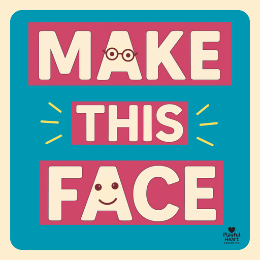

MAKE THIS FACE
Loading…
HOW TO PLAY
Tap the button to get a prompt and try to make your face match it!
Challenge: freeze your expression like a snapshot! No movement and no sound, just hold that face!
FAVORITES
No favorites yet. Save any you love.
SUBMIT YOUR OWN!
Got a funny or creative "Make This Face" idea? We’d love to hear it! Click below to submit and we may feature it in a future update and credit your first name.
PRINT & PLAY
Prefer screen-free play?
Download the Make This Face Print & Play Starter DeckIncludes 53 favorite prompts from the app. Just print, cut, and play!
Tip: If you’re viewing in the app, press and hold this button, copy the link, then open it in your browser to download/print.